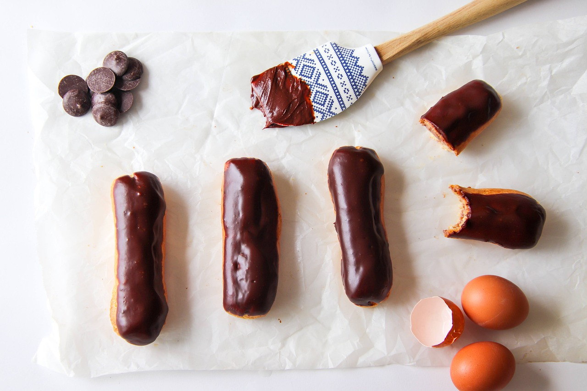
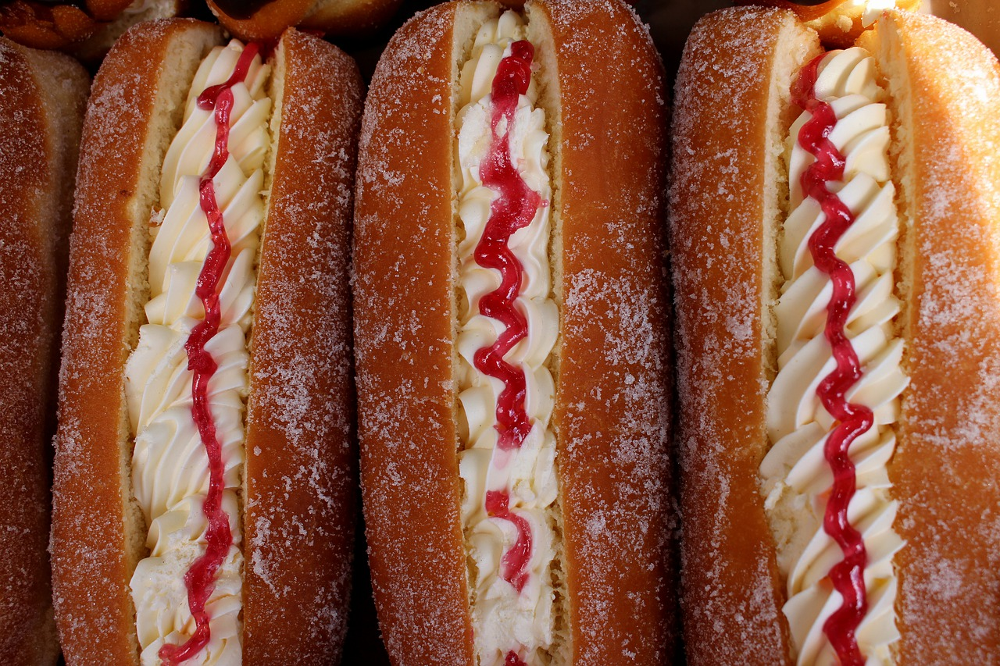

Èclaire
- Farina 00 130 g
- Burro 100 g
- Acqua 200 ml
- Zucchero 6 g
- Uova medie 4
- Sale fino 1 pizzico
- Latte intero 250 ml
- Zucchero 75 g
- Farina 00 25 g
- Tuorli 3
- Baccello di vaniglia ½
- Zucchero 100 g
- Acqua 50 ml
- Zucchero 500 g
- Acqua 175 ml
- Glucosio 90 g
- Caramello 30 g
PER LA CREMA PASTICCERA
PER IL CARAMELLO
PER LO ZUCCHERO FONDENTE
Per realizzare gli éclair, per prima cosa cominciate a preparare la pasta choux, mettete un tegame sul fuoco e aggiungete il burro e l'acqua 1, unite lo zucchero e la presa di sale 2, e mescolate il tutto con una piccola frusta 3. Una volta raggiunto il bollore, togliete il tegame dal fuoco e aggiungete la farina setacciata 4. Riportate la pentola sul fuoco e continuate la cottura rigirando il composto con un cucchiaio di legno 5. Quando il composto si staccherà completamente dalla pentola, formando una patina bianca sul fondo, togliete dal fuoco e lasciatelo raffreddare in un piatto 6.
Una volta freddo, mettete il composto in una planetaria munita di gancio a foglia (in alternativa potete fare questa operazione anche con un cucchiaio di legno in una ciotola, mescolando energicamente), e aggiungete le uova, avendo l'accortezza di aggiungere il successivo solo quando il precedente sarà stato completamente assorbito dall'impasto 7. Alla fine dovrete ottenere un composto liscio e omogeneo che facendolo cadere con una paletta o un mestolo, formerà una specie di "nastro" 8, come si dice in gergo. Quindi trasferite la pasta choux in una sac-à-poche munita di bocchetta liscia dal diametro di 3 cm, e spremete il composto su una leccarda coperta con carta forno 9. Formate così dei bastoncini della lunghezza di circa 10-12 cm.
Infornate in forno già caldo a 170° per 30-35 minuti in forno ventilato, 190 gradi per 30-35 minuti in forno statico. Una volta terminata la cottura lasciateli in forno aperto ad asciugare. A fine cottura gli éclair dovranno risultare leggeri e croccanti 10. Nel frattempo che gli éclair si raffreddano, preparate la crema pasticcera al caramello che vi servirà per farcirli. In un tegame mettete a scaldare il latte con i semi estratti dal baccello di vaniglia; sbattete in una ciotola, con la frusta, i tuorli e lo zucchero quindi aggiungete la farina. Con una pinza, eliminate la bacca e versate il latte riscaldato sul composto a filo 11, amalgamando con la frusta. Riportate il composto sul fuoco e mescolate continuamente fino a che la crema non si sarà addensata 12. ... fine
Perché limitarsi a una farcitura quando se ne possono fare molte? In alternativa alla crema pasticcera potete riempire i vostri éclair con la panna, ma anche con la crema chantilly, quella pasticcera al cioccolato o qualsiasi altra crema. Per rispettare la tradizione, però, mi raccomando: decorate la superficie con lo stesso gusto della farcitura interna! A questo proposito, se non volete realizzare la guarnizione con lo zucchero fondente, potete adottare altre due soluzioni: sciogliere il cioccolato fondente a bagnomaria o in microonde e poi spalmarlo, oppure preparare una semplice glassa all’acqua, mescolando acqua e zucchero. In questo caso potete anche aggiungere dei coloranti, se volete!